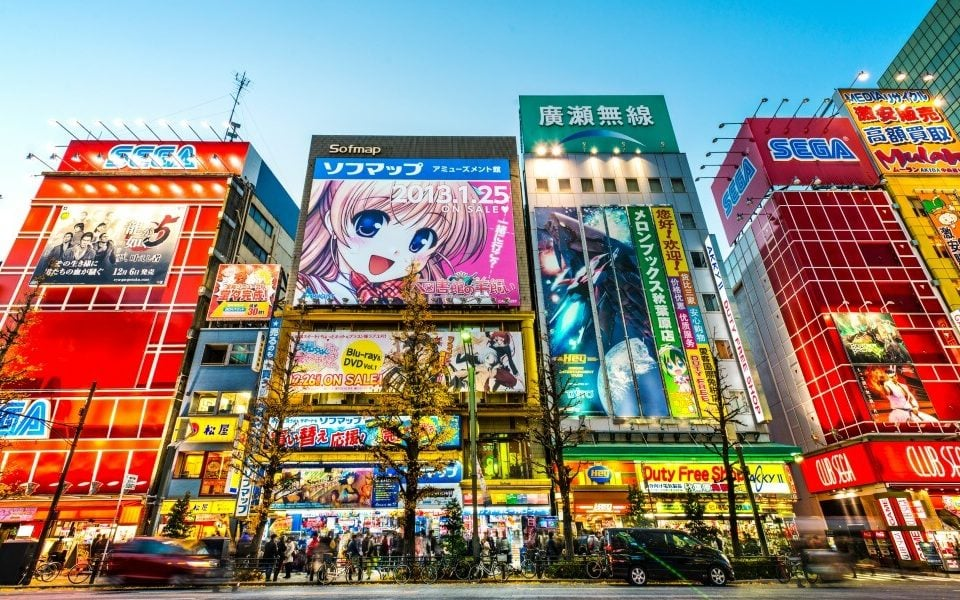
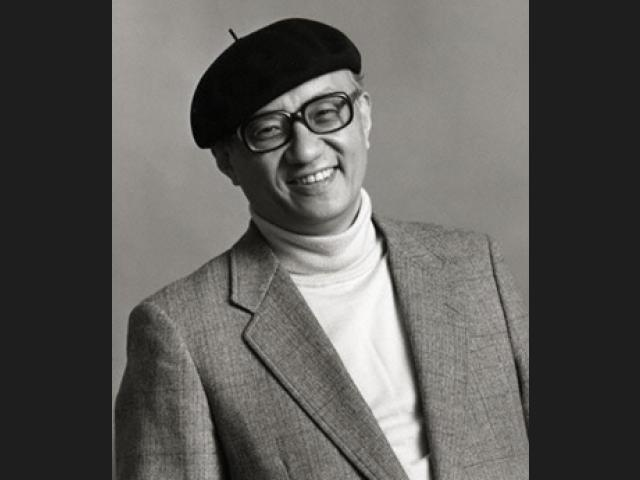
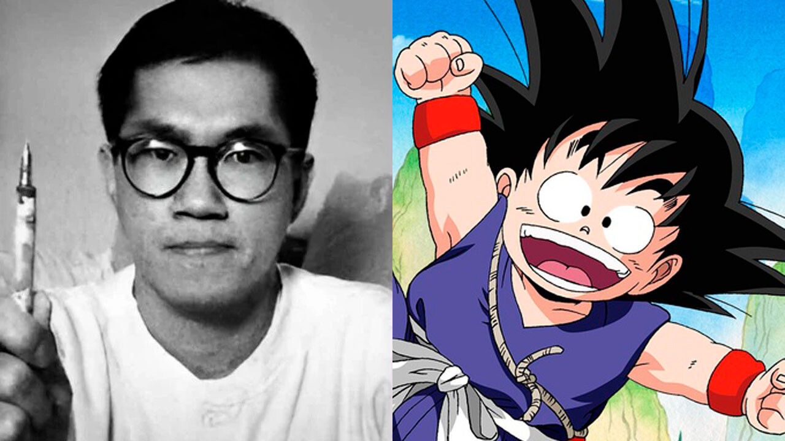
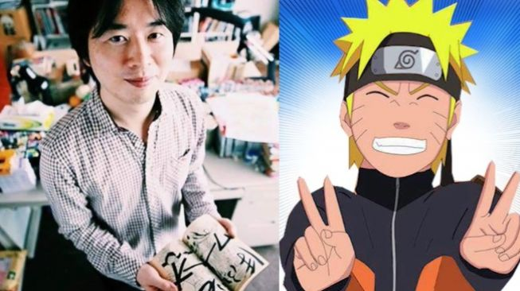
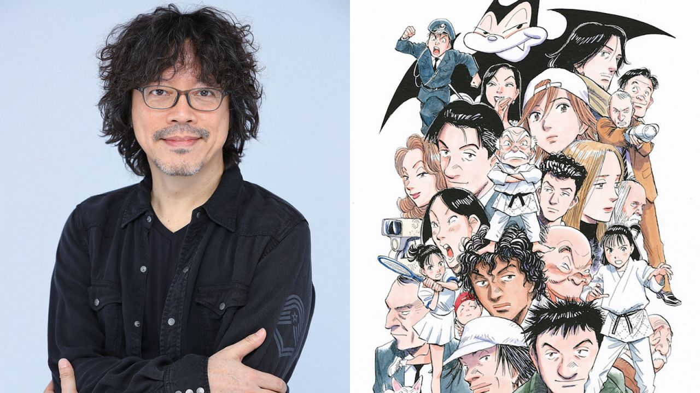
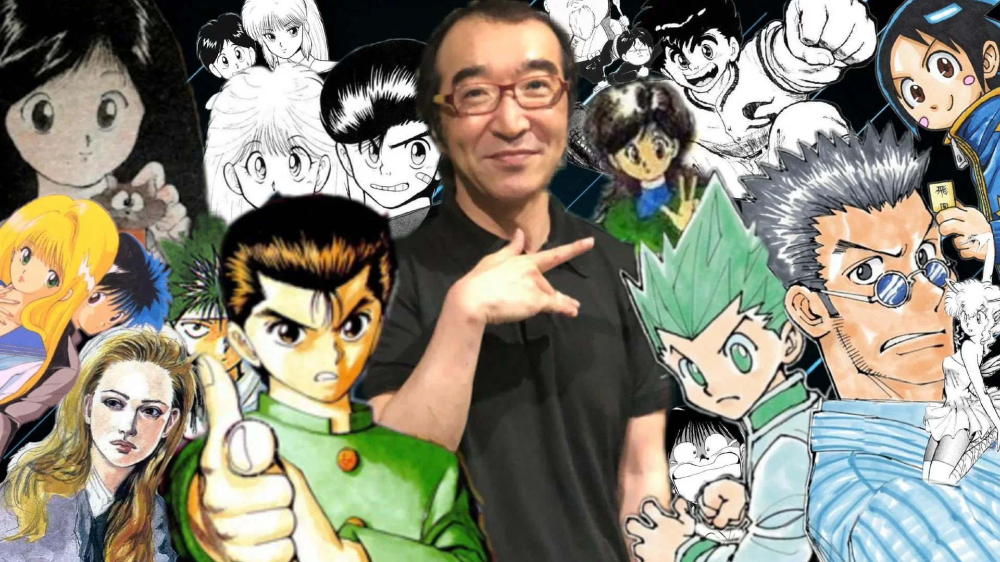
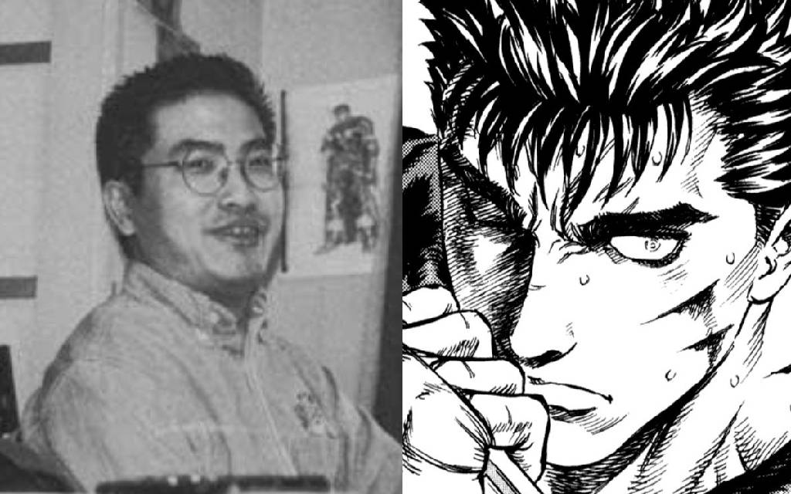

Introducción
Desde las intrincadas calles de Tokio, con sus tiendas repletas de volúmenes de manga y aficionados de todas las edades buscando la última entrega de sus series favoritas, hasta las estanterías de bibliotecas y librerías en ciudades alrededor del mundo, el manga ha dejado una huella imborrable en el paisaje cultural global. Estas historietas japonesas, que tienen sus raíces en las antiguas pinturas en rollo y se han adaptado a lo largo de los siglos para reflejar los cambios socioculturales de Japón, han cautivado a generaciones de lectores con su capacidad única de fusionar arte visualmente deslumbrante con narrativas profundas y emocionalmente resonantes. Trascendiendo barreras lingüísticas, culturales y generacionales, el manga ha demostrado ser mucho más que simples dibujos en papel; es un reflejo de la sociedad, un medio que aborda temas desde el heroísmo y la aventura hasta los desafíos cotidianos y las complejidades del amor y la amistad. A través de sus páginas, los lectores han viajado a mundos fantásticos, han luchado junto a héroes y heroínas, y han llorado y reído con personajes que, a pesar de ser de tinta y papel, sienten tan real y profundamente como cualquier ser humano. Pero detrás de estas emocionantes sagas y conmovedoras historias de vida, hay mentes brillantes en el trabajo: los mangakas. Estos creadores, que dedican innumerables horas a perfeccionar cada viñeta y dar vida a cada personaje, son el alma y el corazón del mundo del manga. Desde sus humildes comienzos, enfrentando obstáculos y superando adversidades, hasta alcanzar la cima del mundo del manga y ser reconocidos mundialmente, su viaje es tan fascinante como las historias que crean. En este artículo, emprenderemos un viaje para descubrir a estos maestros del arte y la narrativa, explorando no solo su impacto en la industria del manga, sino también su influencia en la cultura popular y su legado perdurable. Nos sumergiremos en las vidas y obras de algunos de los mangakas más icónicos y revolucionarios de la historia, aquellos que con su visión y talento han redefinido el paisaje del manga, sentando las bases para las futuras generaciones de creadores y dejando un legado que continúa inspirando a artistas y lectores en todo el mundo.
Mangakas Destacados
- Osamu Tezuka
- Akira Toriyama
- Eiichiro Oda
- Masashi Kishimoto
- Naoki Urasawa
- Yoshihiro Togashi
- Kentaro Miura
Osamu Tezuka
Osamu Tezuka fue una figura influyente en la industria del manga y del anime en Japón, y es conocido como el "Dios del Manga". Nacido el 3 de noviembre de 1928 en Toyonaka, Osaka, y fallecido el 9 de febrero de 1989, Tezuka dejó una marca indeleble en la cultura pop japonesa.
Inicios y Educación: Tezuka desarrolló un temprano interés en el dibujo y la animación, y fue profundamente influenciado por las caricaturas y los cómics de la época. Estudió medicina en la Universidad de Osaka, aunque nunca ejerció como médico. Sin embargo, su formación médica a menudo se reflejó en su trabajo.
Carrera en el Manga y el Anime: Tezuka comenzó su carrera como mangaka (dibujante de manga) en la década de 1940, y pronto alcanzó la fama con la creación de "Astro Boy" (Tetsuwan Atom) en 1952, que se convirtió en una serie animada en 1963. Fue el inicio de la "Era de Oro del Manga", y Tezuka produjo una cantidad prolífica de trabajo, incluyendo "Black Jack", "Kimba el León Blanco", y "Buda". Fue un pionero en muchos aspectos, introduciendo elementos cinematográficos en sus mangas y estableciendo nuevas normas en la industria del anime. Fundó su propio estudio de animación, Mushi Production, que fue fundamental para establecer el anime como una forma de entretenimiento popular.
Influencia y Legado: Tezuka dejó un legado duradero en la industria del entretenimiento en Japón y en todo el mundo. Su estilo artístico y narrativo ha influenciado a generaciones de creadores, y sus obras continúan siendo celebradas por su innovación y su humanismo. A lo largo de su vida, Tezuka recibió numerosos premios y reconocimientos, y después de su muerte, el Gobierno Japonés lo honró póstumamente con la Orden de la Cultura. También se han establecido varios museos y premios en su honor, incluyendo el Museo Osamu Tezuka en Takarazuka, Hyogo.
Retos y Controversias: A pesar de su éxito, Tezuka enfrentó desafíos, incluyendo la competencia de otros estudios de animación y las presiones económicas. Además, algunas de sus obras han sido objeto de controversia por su representación de personajes y temas sensibles. En resumen, Osamu Tezuka fue una figura icónica cuya influencia en el manga y el anime sigue siendo relevante hasta el día de hoy.
Akira Toriyama
Akira Toriyama es un influyente mangaka y diseñador de personajes japonés, conocido principalmente por su trabajo en "Dragon Ball". Nacido el 5 de abril de 1955 en Nagoya, Aichi, Japón, Toriyama ha dejado una marca duradera en la cultura del manga y el anime.
Inicios y Educación: Toriyama mostró un interés temprano en el dibujo desde su niñez. Aunque no se ha documentado ampliamente sobre su educación formal, se sabe que tras graduarse de la secundaria, trabajó en una empresa de publicidad durante tres años, antes de hacer la transición a la industria del manga.
Carrera en el Manga: Su carrera como mangaka despegó con la serialización de "Dr. Slump" en la revista Weekly Shōnen Jump de 1980 a 1984. La serie fue un gran éxito y estableció a Toriyama como un talentoso creador de manga. Sin embargo, fue "Dragon Ball" (1984-1995), lo que lo catapultó a la fama internacional. Esta épica saga de artes marciales y aventuras se convirtió en una de las series de manga y anime más populares y exitosas de todos los tiempos, generando múltiples series de televisión, películas, videojuegos y una vasta gama de mercancía.
Trabajos Posteriores y Colaboraciones: Después de "Dragon Ball", Toriyama trabajó en una variedad de proyectos, incluyendo mangas cortos, y se convirtió en un codiciado diseñador de personajes para videojuegos. Es conocido por su trabajo en la serie de videojuegos "Dragon Quest" y por colaborar en la creación de personajes para la serie "Chrono Trigger". También ha trabajado en la continuación de la saga de "Dragon Ball" con "Dragon Ball Super" junto con el artista Toyotarou.
Estilo e Influencia: El estilo de dibujo de Toriyama es reconocible por sus personajes carismáticos y su humor peculiar. Su influencia en la industria del manga y del anime es vasta, y "Dragon Ball" en particular ha inspirado a varias generaciones de creadores.
Legado: El legado de Akira Toriyama continúa siendo fuerte, con "Dragon Ball" manteniéndose como una franquicia globalmente reconocida. Su influencia se extiende más allá del manga y el anime, alcanzando también el mundo de los videojuegos y la cultura pop en general. En resumen, Akira Toriyama es una figura icónica en la industria del entretenimiento, cuyas obras continúan siendo celebradas y disfrutadas por fans de todo el mundo.
Eiichiro Oda
Eiichiro Oda es un renombrado mangaka japonés, conocido principalmente por ser el creador de "One Piece", una de las series de manga más populares y exitosas de todos los tiempos. A continuación se detallan aspectos significativos de su vida y carrera:
Inicios y Educación: Nacido el 1 de enero de 1975 en Kumamoto, Japón, Oda mostró un interés temprano en el manga desde su infancia. Según ha compartido en varias entrevistas, su deseo de convertirse en mangaka se solidificó a la edad de cuatro años. Durante su adolescencia, comenzó a enviar sus trabajos a revistas de manga, ganando varios premios que le ayudaron a establecer conexiones en la industria.
Carrera Temprana: Oda trabajó como asistente en varios mangakas famosos antes de lograr el éxito por cuenta propia. Uno de los más notables fue Nobuhiro Watsuki, el creador de "Rurouni Kenshin". A través de estos roles, adquirió experiencia y conexiones valiosas en la industria del manga.
Creación de "One Piece": Eiichiro Oda comenzó la serialización de "One Piece" en la revista Weekly Shōnen Jump en 1997, y rápidamente se convirtió en un fenómeno cultural en Japón y luego en todo el mundo. "One Piece" sigue las aventuras de Monkey D. Luffy y su tripulación en su búsqueda del legendario tesoro conocido como "One Piece" para convertirse en el Rey de los Piratas. El éxito de "One Piece" ha llevado a la creación de una serie animada, películas, videojuegos y una amplia gama de mercancía.
Estilo e Influencias: Oda es conocido por su estilo de dibujo distintivo y su habilidad para crear una narrativa épica y personajes memorables. Su trabajo ha sido influenciado por varios mangakas prominentes, y también ha mencionado su amor por los vikingos y las historias de piratas como una influencia significativa en "One Piece".
Legado y Reconocimientos: "One Piece" ha establecido múltiples récords Guinness World Records, incluyendo el récord por la mayor cantidad de copias publicadas para una misma serie de cómic por un solo autor. Oda continúa trabajando en "One Piece", que es conocido tanto por su longitud como por su continua popularidad y calidad.
Vida Personal: Oda valora su privacidad, pero se sabe que está casado y tiene hijos. También es conocido por su fuerte ética de trabajo, que ha compartido en diversas entrevistas y apariciones públicas. En resumen, Eiichiro Oda es una figura destacada en la industria del manga, cuyo trabajo en "One Piece" ha dejado un legado duradero y continúa siendo una influencia significativa en el mundo del manga y el anime.
.jpg)
Masashi Kishimoto
Masashi Kishimoto es un destacado mangaka japonés, conocido principalmente por ser el creador de la exitosa serie "Naruto". Aquí se detalla un recorrido por su vida y trayectoria:
Inicios y Educación: Masashi Kishimoto nació el 8 de noviembre de 1974 en Okayama, Japón, aunque más tarde se mudó a la prefectura de Nagi. Desde joven, Kishimoto mostró un gran interés por el dibujo y el manga, inspirado por series como "Dragon Ball" y "Kinnikuman".
Carrera Temprana: Después de graduarse, Kishimoto decidió perseguir una carrera como mangaka. Inicialmente enfrentó varios rechazos y desafíos, pero continuó perfeccionando su arte. Su primer manga serializado fue "Karakuri", que fue publicado en 1995 en la revista Weekly Shōnen Jump, aunque no alcanzó un éxito notable.
Creación de "Naruto": Kishimoto encontró su gran oportunidad con la creación de "Naruto", que comenzó a serializarse en la Weekly Shōnen Jump en 1999 y continuó hasta 2014. "Naruto" cuenta la historia de Naruto Uzumaki, un joven ninja con el sueño de convertirse en el líder de su aldea. La serie fue un enorme éxito tanto en Japón como internacionalmente, lo que llevó a la creación de una serie animada, películas, videojuegos y una amplia variedad de mercancía.
Trabajos Posteriores: Después de "Naruto", Kishimoto trabajó en proyectos como "Mario" y "Samurai 8: The Tale of Hachimaru", aunque ninguno alcanzó el nivel de éxito de "Naruto". También supervisó el desarrollo de la secuela de "Naruto", titulada "Boruto: Naruto Next Generations", que sigue las aventuras del hijo de Naruto.
Estilo e Influencias: El estilo de Kishimoto es reconocible por su detallado arte y su habilidad para crear historias emocionales y personajes complejos. Ha citado varias veces la influencia de Akira Toriyama, el creador de "Dragon Ball", en su trabajo.
Legado: El legado de Masashi Kishimoto en la industria del manga y anime es considerable, con "Naruto" siendo una de las series más icónicas y reconocibles de su generación. La influencia de "Naruto" se extiende más allá del manga, impactando la cultura pop y sirviendo de inspiración para muchos otros creadores.
Vida Personal: Kishimoto es conocido por ser reservado respecto a su vida personal, aunque se sabe que está casado y tiene hijos. En resumen, Masashi Kishimoto es una figura prominente en la comunidad del manga y del anime, cuya obra "Naruto" ha dejado una marca indeleble en el género y continúa siendo celebrada por fans de todo el mundo.
Naoki Urasawa
Naoki Urasawa es un respetado mangaka japonés, conocido por su habilidad para tejer complejas narrativas y crear personajes profundos. Nacido el 2 de enero de 1960 en Tokio, Japón, Urasawa ha contribuido de manera significativa al mundo del manga con varias obras aclamadas. A continuación, se presentan los aspectos más destacados de su vida y carrera:
Inicios y Educación: Desde joven, Urasawa mostró un interés en el dibujo y el manga. Aunque inicialmente aspiraba a ser un artista musical, su pasión por el manga lo llevó a seguir una carrera como mangaka.
Carrera en el Manga: Urasawa debutó como mangaka en 1981. Sin embargo, su primer gran éxito llegó con "Yawara! A Fashionable Judo Girl" en 1986. Esta serie le permitió ganar reconocimiento en la industria del manga.
Obras Destacadas: 1. Monster (1994-2001): Considerada una de sus mejores obras, "Monster" es una intrincada historia de suspense que sigue al Dr. Kenzo Tenma mientras busca a un peligroso asesino en serie. 2. 20th Century Boys (1999-2006): Esta serie de ciencia ficción y misterio es aclamada por su compleja narrativa y su exploración de temas de amistad y confianza. 3. Pluto (2003-2009): Una reinterpretación del arco argumental de "Astro Boy" de Osamu Tezuka, "Pluto" es una emotiva narrativa que explora temas de guerra y humanidad. 4. Billy Bat (2008-2016): Una historia de misterio que entrelaza múltiples líneas temporales y personajes.
Estilo e Influencias: Urasawa es conocido por su estilo de dibujo detallado y realista, así como por su capacidad para construir narrativas complejas y emotivas. Sus influencias incluyen a Osamu Tezuka y a varios otros mangakas y creadores de cómics occidentales.
Reconocimientos: A lo largo de su carrera, Urasawa ha recibido varios premios y reconocimientos, incluyendo el Premio Cultural Osamu Tezuka y el Premio a la Excelencia del Festival de Arte de Japón.
Legado: El legado de Urasawa reside en su habilidad para elevar el manga a una forma de arte seria y reflexiva. Sus obras continúan siendo influyentes y están bien consideradas tanto en la comunidad del manga como en el público en general.
Vida Personal: Urasawa es conocido por ser reservado con respecto a su vida personal, pero ha compartido su amor por la música y ha realizado varias actuaciones musicales en público. En resumen, Naoki Urasawa es un mangaka de gran renombre cuyas obras profundas y pensativas han dejado una marca duradera en la industria del manga, consolidando su posición como uno de los creadores de manga más respetados de su tiempo.
Yoshihiro Togashi
Yoshihiro Togashi es un destacado mangaka japonés, conocido por ser el creador de series exitosas como "Yu Yu Hakusho" y "Hunter x Hunter". Nacido el 27 de abril de 1966 en Shinjō, Yamagata, Japón, Togashi ha tenido una carrera notable en el mundo del manga. A continuación, se presenta un resumen de su vida y obra:
Inicios y Educación: Desde muy joven, Togashi mostró un profundo interés por el dibujo y el manga. Sin embargo, no hay mucha información disponible sobre su educación formal.
Carrera Temprana: Togashi comenzó su carrera en el manga en la década de 1980. Su primera obra notable fue "Tonda Birthday Present", que fue bien recibida, pero su verdadero salto llegó con "Yu Yu Hakusho" en 1990.
Obras Destacadas: 1. **Yu Yu Hakusho (1990-1994)**: Esta serie, que sigue las aventuras del delincuente adolescente Yusuke Urameshi como un detective espiritual después de su muerte, fue un gran éxito y contribuyó a establecer a Togashi como un mangaka prominente. 2. **Level E (1995-1997)**: Aunque no tan conocida como otras obras de Togashi, "Level E" es una serie de ciencia ficción y comedia que fue bien recibida por su humor y diseño creativo. 3. **Hunter x Hunter (1998-actualidad)**: Es probablemente la obra más conocida de Togashi. "Hunter x Hunter" es aclamada por su compleja narrativa, desarrollo de personajes y exploración de temas oscuros. Aunque la serie ha sufrido numerosos hiatus debido a los problemas de salud de Togashi, continúa siendo altamente popular y respetada.
Estilo e Influencias: Togashi es conocido por su narrativa compleja y bien elaborada, y por su capacidad para explorar temas oscuros y psicológicos en su trabajo. Su estilo de dibujo puede variar desde detallado y meticuloso hasta más simplificado, especialmente durante los períodos en que ha enfrentado problemas de salud.
Reconocimientos: A lo largo de su carrera, Togashi ha recibido varios premios y reconocimientos por su contribución al manga. Su influencia se extiende más allá de sus obras, ya que muchos mangakas contemporáneos citan su trabajo como una fuente de inspiración.
Vida Personal: Togashi está casado con Naoko Takeuchi, la creadora de "Sailor Moon". Ambos han hablado públicamente sobre su apoyo mutuo en sus respectivas carreras.
Legado: El legado de Yoshihiro Togashi se centra en su capacidad para crear mundos ricos y complejos con personajes bien desarrollados. A pesar de los desafíos de salud que han interrumpido su trabajo, Togashi sigue siendo una figura respetada en la comunidad del manga. En resumen, Yoshihiro Togashi es un mangaka talentoso cuyas obras han dejado una impresión duradera en la industria del manga, y su impacto continúa siendo sentido a través de la popularidad sostenida y la influencia de series como "Hunter x Hunter" y "Yu Yu Hakusho".
Kentaro Miura
Kentaro Miura fue un influyente mangaka japonés, conocido principalmente por su obra maestra "Berserk". Nacido el 11 de julio de 1966 en Chiba, Japón, y fallecido el 6 de mayo de 2021, Miura dejó un legado perdurable en el mundo del manga. A continuación, se detallan varios aspectos de su vida y carrera:
Inicios y Educación: Desde joven, Miura sintió una fuerte pasión por el dibujo y el manga. Se matriculó en una escuela artística en su adolescencia y más tarde asistió a la Universidad de Artes de Nihon.
Carrera Temprana: Miura hizo su debut en el mundo del manga a la temprana edad de 10 años con "Miuranger", que creó para sus amigos. Continuó trabajando en varios proyectos durante su adolescencia y los primeros años de su vida adulta.
Obras Destacadas: 1. **Berserk (1989-2021)**: "Berserk" es la obra más conocida y aclamada de Miura. La serie, que comenzó en 1989, sigue la oscura y épica saga de Guts, un mercenario atormentado en un mundo medieval brutal. La complejidad de la narrativa y el detallado arte de "Berserk" han hecho que sea considerada una de las mejores series de manga de todos los tiempos.
Estilo e Influencias: Miura era conocido por su detallado y meticuloso estilo de dibujo, así como por su capacidad para crear una narrativa compleja y personajes profundamente desarrollados. A lo largo de los años, exploró temas oscuros, filosofía y la condición humana en su obra.
Reconocimientos: A lo largo de su carrera, Miura recibió varios premios y reconocimientos por su contribución al manga. "Berserk" en particular ha sido altamente elogiada por críticos y fans por igual.
Legado: El legado de Kentaro Miura es vasto. "Berserk" ha influenciado a numerosos creadores en el mundo del manga, anime y más allá. La serie también ha tenido adaptaciones al anime y videojuegos, y continúa siendo una obra de referencia en el género de fantasía oscura.
Vida Personal: Miura era conocido por ser extremadamente privado respecto a su vida personal. Sin embargo, su fallecimiento en 2021 fue un golpe devastador para los fans y la comunidad del manga en general. En resumen, Kentaro Miura fue un mangaka excepcional cuya obra "Berserk" dejó una huella indeleble en el mundo del manga, y su influencia continúa siendo sentida en la industria y la cultura pop en general.
Impacto Cultural
Aunque el manga tiene sus raíces en Japón, su popularidad ha cruzado fronteras. A lo largo de las últimas décadas, el manga ha ganado una audiencia masiva en todo el mundo, especialmente en Norteamérica, Europa y otras partes de Asia. La estilización única y las técnicas narrativas del manga han influenciado a artistas y escritores en todo el mundo. Esto puede verse en cómics, películas y programas de televisión que adoptan elementos estilísticos o temáticos del manga. A diferencia de muchos cómics occidentales que a menudo se centran en superhéroes o géneros específicos, el manga abarca una amplia variedad de géneros, desde romance hasta ciencia ficción, horror, deportes y más. Esta diversidad ha permitido que diferentes grupos de lectores se conecten con historias que resuenan con sus propias experiencias y intereses. l manga y el anime (animación japonesa) a menudo están interconectados. Muchos animes populares se basan en mangas de éxito, y viceversa. Esta relación ha ayudado a popularizar ambos formatos en todo el mundo. La popularidad del manga (y el anime) ha llevado a muchos aficionados internacionales a visitar Japón, impulsando el turismo relacionado con la cultura otaku. Ciudades como Tokio tienen distritos enteros, como Akihabara, que se han convertido en mecas para los fans del manga y el anime. El manga y el anime han influenciado la moda no solo en Japón, sino también en otros países. Esto puede verse en estilos de vestimenta, accesorios y hasta peinados inspirados en personajes populares. El manga ha sido reconocido en premios literarios y de arte en todo el mundo. Esto ha ayudado a solidificar su posición no solo como una forma popular de entretenimiento, sino también como una forma legítima de expresión artística y narrativa.A través de sus diversas historias, el manga ha abordado temas complejos, desde relaciones personales hasta problemas sociales, políticos y filosóficos. Esto ha permitido que el manga sea una herramienta para discutir y reflexionar sobre cuestiones importantes en la sociedad.